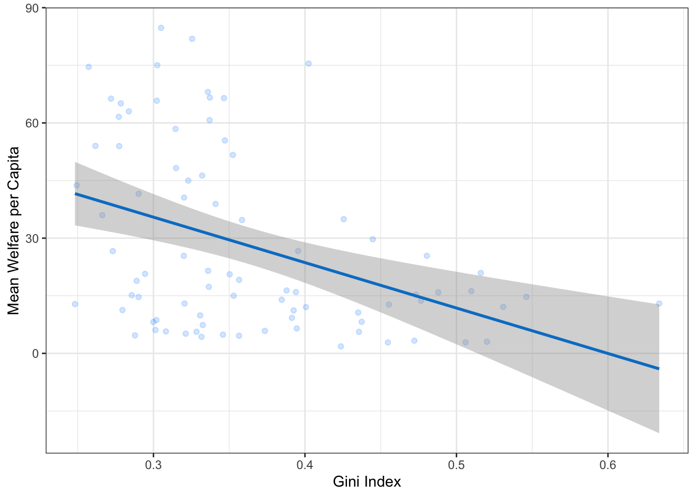
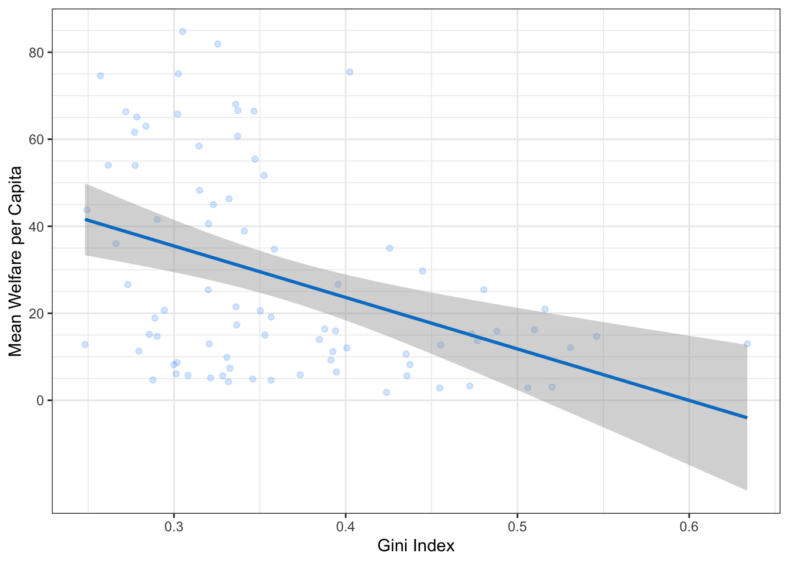
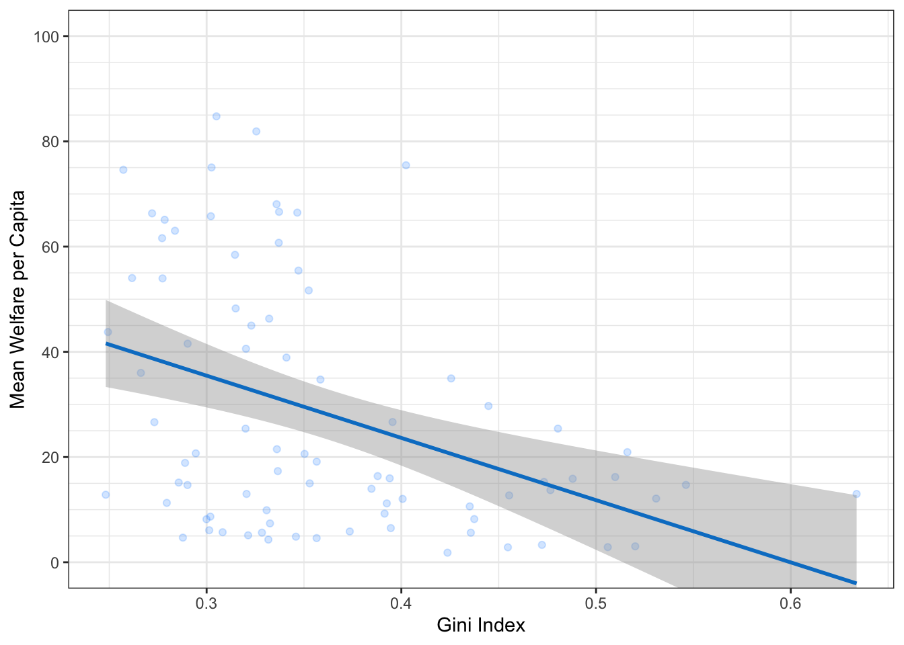
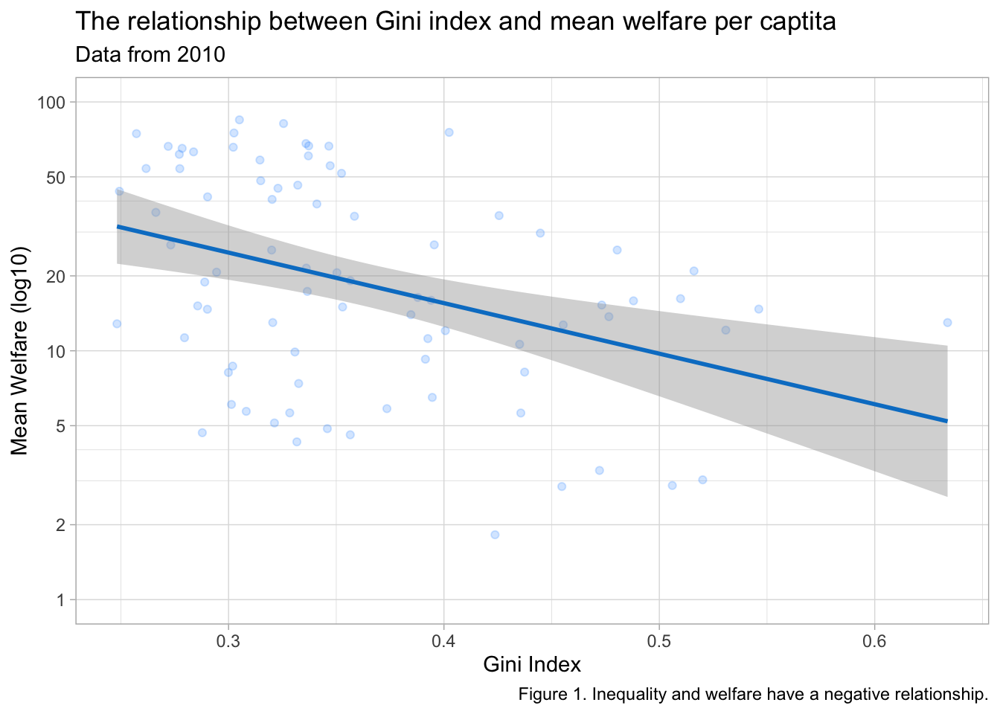
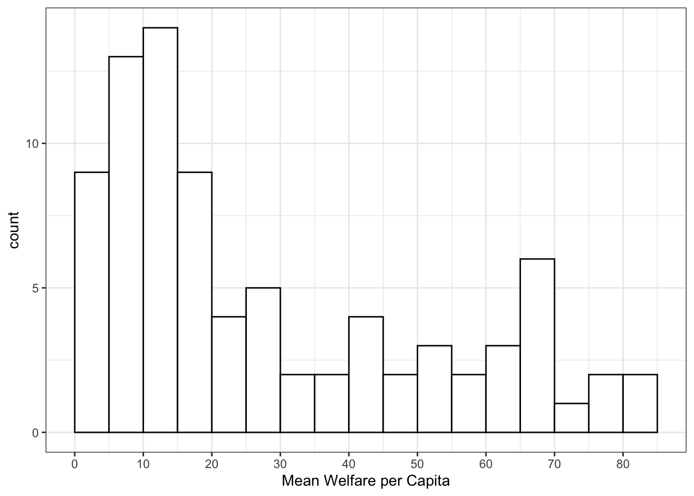
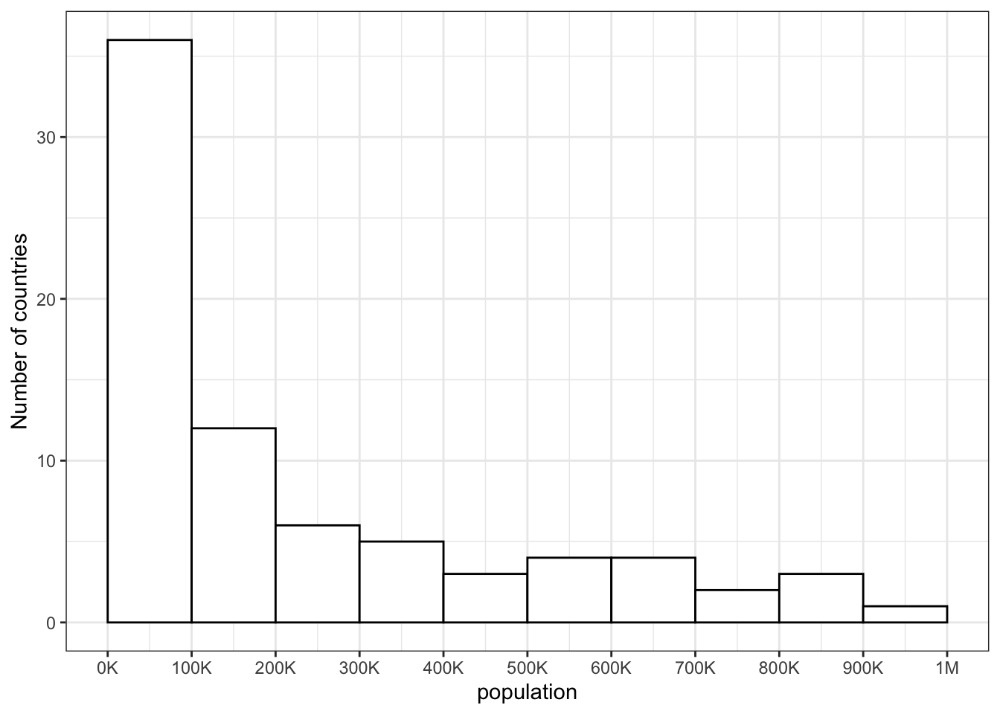
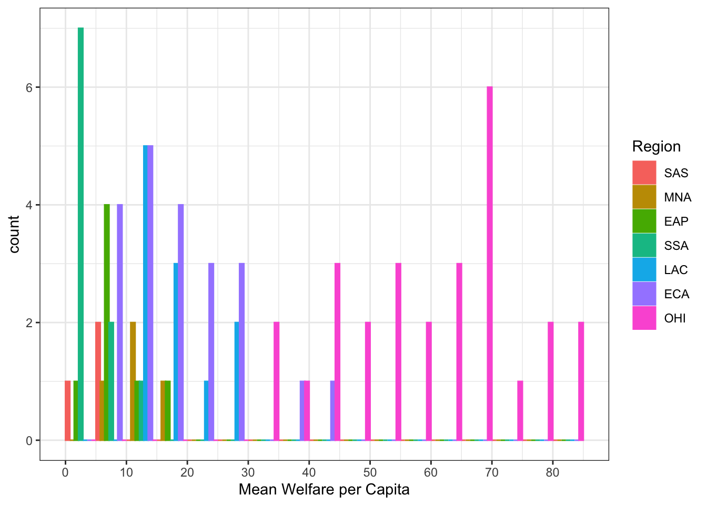
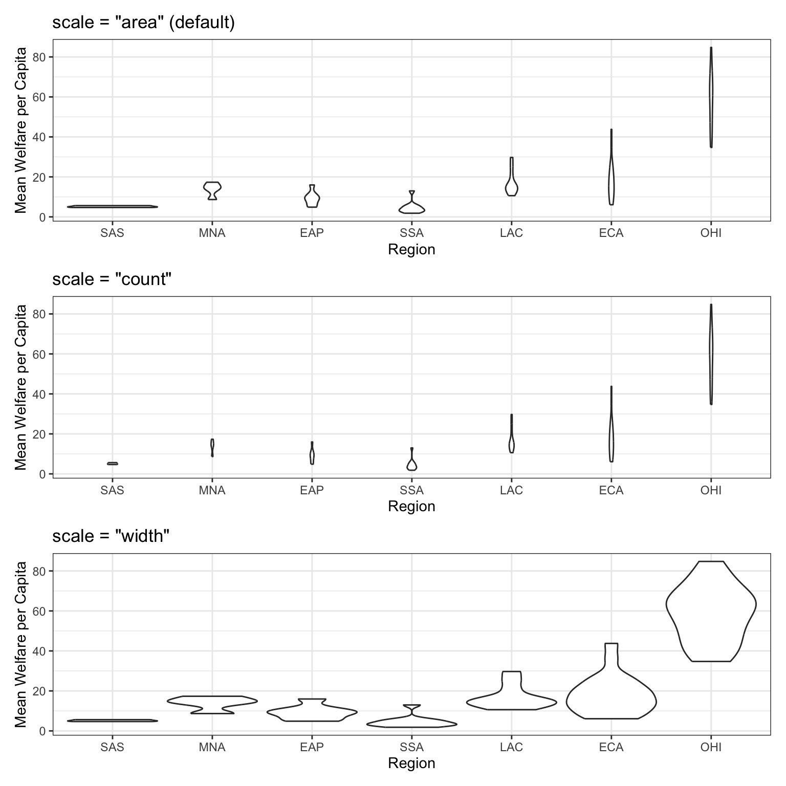
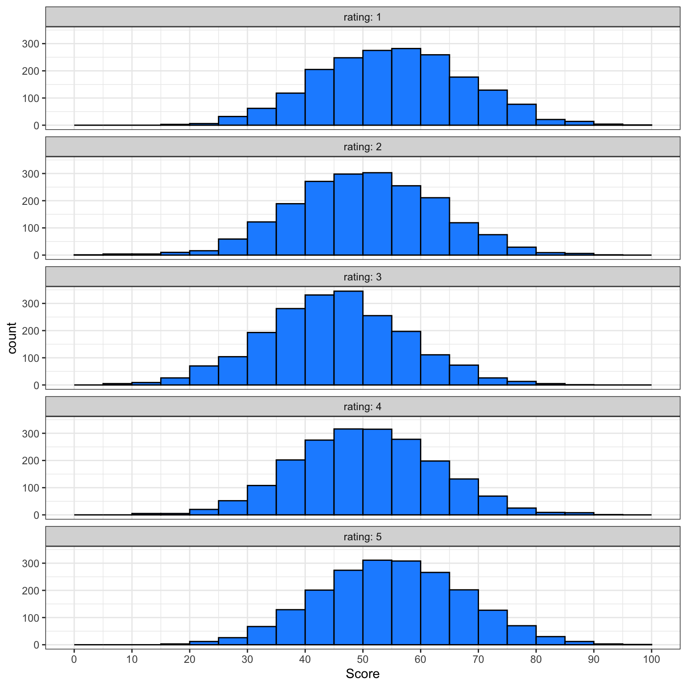

3 Data Visualisation
Intended Learning Outcomes
Functions used
- built-in (you can always use these without loading any packages)
- tidyverse (you can use all these with
library(tidyverse))- readr::
readr::read_csv() - dplyr::
dplyr::count() - ggplot2::
aes(),coord_cartesian(),element_blank(),facet_wrap(),geom_bar(),geom_boxplot(),geom_col(),geom_histogram(),geom_jitter(),geom_point(),geom_smooth(),ggplot(),ggsave(),ggtitle(),guides(),scale_fill_manual(),scale_x_continuous(),scale_x_discrete(),scale_y_continuous(),spec(),theme(),theme_bw(),theme_minimal(),theme_set()
- readr::
- other (you need to load each package to use these)
- ggthemes::
ggthemes::theme_gdocs() - patchwork::
patchwork::plot_layout()
- ggthemes::
Set-up
TipActivity
- Open your
ADS-2026project - Create a new quarto file called
03-dataviz.qmd - Update the YAML header
- Replace the setup chunk with the one below:
If you get the message Error in library(x) : there is no package called ‘x’, please refer to Section 1.4.1.
We’d recommend making a new code chunk for each different activity, and using the white space to make notes on any errors you make, things you find interesting, or questions you’d like to ask the course team.
TipActivity
Download the ggplot2 cheat sheet.
3.1 Building plots
There are multiple approaches to data visualisation in R; in this course we will use the popular package
Figure 3.1 displays the evolution of a simple scatterplot using this layered approach. First, the plot space is built (layer 1); the variables are specified (layer 2); the type of visualisation (known as a geom) that is desired for these variables is specified (layer 3) - in this case geom_point() is called to visualise individual data points; a second geom is added to include a line of best fit (layer 4), the axis labels are edited for readability (layer 5), and finally, a theme is applied to change the overall appearance of the plot (layer 6).
Importantly, each layer is independent and independently customisable. For example, the size, colour and position of each component can be adjusted, or one could, for example, remove the first geom (the data points) to only visualise the line of best fit, simply by removing the layer that draws the data points (Figure 3.2). The use of layers makes it easy to build up complex plots step-by-step, and to adapt or extend plots from existing code.
3.1.1 Loading data
Let’s build up the plot above, layer by layer. First we need to get the data. We’ll learn how to load data from different sources in Appendix C, but this time we’ll use the same method as we did in Section 2.3.3 and load it from an online source.
TipActivity
When you load the data, read_csv() will produce a message that gives you information about the data it has imported and what assumptions it has made. The “column specification” tells you what each column is named and what type of data R has categorised each variable as. The abbreviation “chr” is for character columns, “dbl” is for double columns, and “dttm” is a date/time column.
This data is from the World Bank’s Poverty and Inequality Platform (accessed on 2025-08-05).
The first thing you should do when you need to plot data is to get familiar with what all of the rows (observations) and columns (variables) mean. Sometimes this is obvious, and sometimes it requires help from the data provider. Here, each row represents data for one region for one year.
-
region_nameis the name of the world region, like “South Asia” -
region_codeis the 3-letter abbreviation for region -
country_nameis the name of the country -
country_codeis the 3-letter country code -
reporting_yearis a year 1963 - 2024 -
reporting_levelis “national” for this entire dataset -
giniis a measure of inequality that ranges from 0 (perfect equality) to 1 (complete inequality) -
welfare_meanis average welfare per capita (see the methodology page for more info on how this is calculated) -
welfare_medianis the amount of welfare per capita that divides the distribution into two equal halves
3.1.2 Plot setup
3.1.2.1 Default theme
Plots in this book use the black-and-white theme, not the default grey theme, so set your default theme to the same so your plots will look like the examples below. At the top of your script, in the setup chunk after you’ve loaded the tidyverse package, add the following code and run it. You’ll learn more ways to customise your theme in Section 3.2.4 and Section F.3.
3.1.2.2 Data
Every plot starts with the ggplot() function and a data table. If your data are not loaded or you have a typo in your code, this will give you an error message. It’s best to check your plot after each step, so that you can figure out where errors are more easily.
3.1.2.3 Mapping
The next argument to ggplot() is the mapping. This tells the plot which columns in the data should be represented by, or “mapped” to, different aspects of the plot, such as the x-axis, y-axis, line colour, object fill, or line style. These aspects, or “aesthetics”, are listed inside the aes() function.
TipActivity
Set the arguments x and y to the names of the columns you want to be plotted on those axes. Here, we want to plot gini (the measure of inequality) on the x-axis and welfare_mean (average welfore per capita) on the y-axis.
In the example above, we wrote out the names of the arguments data and mapping, but in practice, almost everyone omits them. Just make sure you put the data and mapping in the right order.
3.1.2.4 Label Attributes
You probably don’t want the axis labels to read “gini” and “welfare_mean”. These are great column labels that fit our rules for naming objects in R (Section 2.1.4), but are not plot-friendly.
Before ggplot2 version 4.0.0, you had to always manually change the aesthetic labels with labs() or a scale_* function. But now you can add plot-friendly labels directly to the data table so they are always used.
TipActivity
Update the labels for each variable.
# set label attributes
attr(pip$region_name, "label") <- "Region"
attr(pip$region_code, "label") <- "Region"
attr(pip$country_name, "label") <- "Country"
attr(pip$country_code, "label") <- "Country"
attr(pip$reporting_year, "label") <- "Year"
attr(pip$gini, "label") <- "Gini Index"
attr(pip$welfare_mean, "label") <- "Mean Welfare per Capita"
Caution
If this doesn’t work, check what version of ggplot2 you’re using with packageVersion("ggplot2").
3.1.2.5 Geoms
Now we can add our plot elements in layers. These are referred to as geoms and their functions start with geom_. You add layers onto the base plot created by ggplot() with a plus (+).
TipActivity

CautionLocation of the +
Somewhat annoyingly, the plus has to be on the end of the previous line, not at the start of the next line. If you do make this mistake, it will run the first line of code to produce the base layer but then you will get the following error message rather than adding on geom_point().

3.1.3 Multiple geoms
Part of the power of

3.1.4 Plot objects
Just like you can save numbers and data tables to objects, you can also save the output of ggplot(). The code below produces the same plots we created above but saves them to objects named points_top and points_bottom. If you run just this code, the plots won’t display like they have done before. Instead, you’ll see the object names appear in the environment pane.
# points on top of boxplot
points_top <- ggplot(pip, aes(x = region_name, y = welfare_mean)) +
geom_boxplot(width = .2) +
geom_jitter(width = .2) +
coord_flip()
# points underneath boxplot
points_bottom <- ggplot(pip, aes(x = region_name, y = welfare_mean)) +
geom_jitter(width = .2) +
geom_boxplot(width = .2) +
coord_flip()To view the plots, call the objects by name. This will output each plot separately.
TipActivity
Save your two plots to objects with appropriate names and then view them.
3.1.5 Combining plots
One of the reasons to save your plots to objects is so that you can combine multiple plots using functions from the patchwork package. The code below produces the plot above by combining the two plots with + and then specifying that we want the plots produced on a single row with the nrow argument in plot_layout().
TipActivity
- Combine your plots using
plot_layout(). - Try changing the value of
nrowto 2. - Add the argument
axes = "collect"toplot_layout(). Use the help documentation for additional explanation on what it does.
The patchwork documentation has some great resources and examples of all the different ways in which you can adjust the layout when you combine multiple plots.
3.2 Customising plots
There are nearly endless ways to customise ggplots. We’ll cover a few of the basic customisations here.
3.2.1 Styling geoms
For our scatterplot, We should definitely put the line in front of the points, but the points are still a bit dark. If you want to change the overall style of a geom, you can set the arguments colour, alpha, shape, size and linetype inside the geom function. There are many different values that you can set these to; Appendix F gives details of these.
ggplot(pip, aes(x = gini, y = welfare_mean)) +
geom_point(colour = "dodgerblue",
alpha = 0.2, # 20% transparency
shape = 18, # solid diamond
size = 2) +
# setting method & formula avoids an annoying message
geom_smooth(method = lm, # method of linear model (lm)
formula = y~x, # formula used to draw line
colour = rgb(0, .5, .8),
linetype = 3)
TipActivity
Play around with different values above and figure out what the default values are for shape and size.
WarningSetting aesthetics overall versus by category
This method is only for changing the style of all the shapes made with that geom. If you want, for example, points to have different colours depending on which region they are from, you set the argument colour = region inside the aes() function for the mapping. You can customise the colours used with scale_ functions, which you will learn about below and in Appendix F.
3.2.2 Format axes
Now we need to make the axes look neater. There are several functions you can use to change the axis labels, but the most powerful ones are the scale_ functions. You need to use a scale function that matches the data you’re plotting on that axis and this is where it becomes particularly important to know what type of data you’re working with. Both of the axes here are continuous, so we’ll use scale_x_continuous() and scale_y_continuous().

The name argument changes the axis label. The breaks argument sets the major units and needs a vector of possible values, which can extend beyond the range of the data (e.g., gini values in this set are only between 0.2 and 0.7, but we can specify breaks 0-1 to make the maths easier or anticipate updates to the data). The seq() function creates a sequence of numbers from one to another by specified steps.
TipActivity
Set the y-axis name to “Mean Welfare per Capita” and the breaks to every 20 with minor breaks every 5. Check the help for ?scale_y_continuous to see how you would set the minor units.
NoteSolution
ggplot(pip, aes(x = gini, y = welfare_mean)) +
geom_point(colour = "dodgerblue",
alpha = 0.2) +
geom_smooth(method = lm,
formula = y~x,
colour = rgb(0, .5, .8)) +
# customise axis labels and breaks
scale_x_continuous(breaks = seq(from = 0, to = 1, by = .1)) +
scale_y_continuous(breaks = seq(from = 0, to = 100, by = 20),
minor_breaks = seq(from = 0, to = 100, by = 5))
3.2.3 Axis limits
If you want to change the minimum and maximum values on an axis, use the coord_cartesian() function. Many plots make more sense if the minimum and maximum values represent the range of possible values, even if those values aren’t present in the data. Here, the mean_welfare ranges between 0 and 100.
ggplot(pip, aes(x = gini, y = welfare_mean)) +
geom_point(colour = "dodgerblue",
alpha = 0.2) +
geom_smooth(method = lm,
formula = y~x,
colour = rgb(0, .5, .8)) +
scale_x_continuous(breaks = seq(from = 0, to = 1, by = .1)) +
scale_y_continuous(breaks = seq(from = 0, to = 100, by = 20),
minor_breaks = seq(from = 0, to = 100, by = 5)) +
# set axis limits
coord_cartesian(ylim = c(0, 100))

TipActivity
- Update the ylim limits of
mean_welfareas above. - Then, update the xlim of
giniaccording to their minimum and maximum values (these were described earlier). This plot looks quite strange and we wouldn’t recommend this is how you present the data, but consider the story it tells and how it might change your interpretation.
ImportantSetting limits with the scale_ function
You can also set the limits argument inside the scale_ functions, but this actually removes any data that falls outside these limits, rather than cropping your plot, and this can change the appearance of certain types of plots like violin plots and density plots.
3.2.4 Themes
theme_minimal() and theme_bw(), but the base_size argument.
It’s also worth highlighting that this code is starting to look quite complicated because of the number of layers, but because we’ve built it up slowly it should (hopefully!) make sense. If you see examples of
ggplot(pip, aes(x = gini, y = welfare_mean)) +
geom_point(colour = "dodgerblue",
alpha = 0.2) +
geom_smooth(method = lm,
formula = y~x,
colour = rgb(0, .5, .8)) +
scale_x_continuous(breaks = seq(from = 0, to = 1, by = .1)) +
scale_y_continuous(breaks = seq(from = 0, to = 100, by = 20),
minor_breaks = seq(from = 0, to = 100, by = 5)) +
coord_cartesian(ylim = c(1, 100)) +
# change the theme
theme_light(base_size = 11)
3.2.5 Theme tweaks
If you’re still not quite happy with a theme, you can customise it even further with the themes() function. Check the help for this function to see all of the possible options. The most common thing you’ll want to do is to remove an element entirely. You do this by setting the relevant argument to element_blank(). Below, we’re getting rid of the plot background, which removes the line around the plot.
ggplot(pip, aes(x = gini, y = welfare_mean)) +
geom_point(colour = "dodgerblue",
alpha = 0.2) +
geom_smooth(method = lm,
formula = y~x,
colour = rgb(0, .5, .8)) +
scale_x_continuous(breaks = seq(from = 0, to = 1, by = .1)) +
scale_y_continuous(breaks = seq(from = 0, to = 100, by = 20),
minor_breaks = seq(from = 0, to = 100, by = 5)) +
coord_cartesian(ylim = c(1, 100)) +
theme_light(base_size = 11) +
# customise theme elements
theme(plot.background = element_blank())3.3 Figure captions
You can add a caption directly to the image using the labs() function, which also allows you to add or edit the title, subtitle, and axis labels.
ggplot(pip, aes(x = gini, y = welfare_mean)) +
geom_point(colour = "dodgerblue",
alpha = 0.2) +
geom_smooth(method = lm,
formula = y~x,
colour = rgb(0, .5, .8)) +
scale_x_continuous(breaks = seq(from = 0, to = 1, by = .1)) +
scale_y_continuous(breaks = seq(from = 0, to = 100, by = 20),
minor_breaks = seq(from = 0, to = 100, by = 5)) +
coord_cartesian(ylim = c(1, 100)) +
theme_light(base_size = 11) +
theme(plot.background = element_blank()) +
# add labels
labs(title = "The relationship between Gini index and mean welfare per captita",
subtitle = "Data from 2010",
caption = "Figure 1. Inequality and welfare have a negative relationship.")

However, when you use labs() you are creating a caption that appears inside the rendered plot, specifically in the bottom-right corner by default and can’t be read by a screen reader. It is more accessible to include this sort of information in plain text for screen readers. Instead of using labs() for captions, you can add a text caption in the code chunk header. You should also add alt-text descriptions for screen readers that describe the image.
```{r}
#| label: fig-gini-welfare
#| fig-cap: "Inequality and welfare have a negative relationship."
#| fig-alt: "A scatterplot showing Gini index on the x-axis (range ~0.2 to 0.65) and mean welfare per capita on the y-axis (range 0 to 100) with a trend line showing that as gini increases from about 0.2 to 0.65, welfare decreases from about 30 to 5."
# figure code here
```
TipActivity
Add a title, subtitle, caption, and alt-text to your plot.
3.3.1 Saving Plots
You can save a ggplot using ggsave(). It saves the last ggplot you made, by default, but you can specify which plot you want to save if you assigned that plot to a variable.
You can set the width and height of your plot. The default units are inches, but you can change the units argument to “in”, “cm”, or “mm”.
TipActivity
- Save two copies of a plot you have made from this chapter with different sizes.
- Make sure you can find them on your computer - they should be stored in your project folder.
Note
The file type is set from the filename suffix, or by specifying the argument device, which can take the following values: “eps”, “ps”, “tex”, “pdf”, “jpeg”, “tiff”, “png”, “bmp”, “svg” or “wmf”.
3.4 Appropriate plots
Now that you know how to build up a plot by layers and customise its appearance, you’re ready to learn about some more plot types. Different types of data require different types of plots, so this section is organised by data type.
The ggplot2 cheat sheet is a great resource to help you find plots appropriate to your data, based on how many variables you’re plotting and what type they are. The examples below all use the same poverty and inequality platform data, but each plot communicates something different.
We don’t expect you to memorise all of the plot types or the methods for customising them, but it will be helpful to try out the code in the examples below for yourself, changing values to test your understanding.
3.4.1 Counting categories
3.4.1.1 Bar plot
If you want to count the number of things per category, you can use geom_bar(). You only need to provide a x mapping to geom_bar() because by default geom_bar() uses the number of observations in each group of x as the value for y, so you don’t need to tell it what to put on the y-axis.
TipActivity
You probably want to customise some things, like the colours, order of the columns, and their labels. Inspect the code below and try running it layer by layer to figure out where these things change. The functions scale_fill_manual() and scale_x_discrete() are new, but work in the same way as the other scale_ functions. You can learn more about this in Appendix H.
NoteCode
ggplot(pip, aes(x = region_code,
fill = region_code)) +
geom_bar() +
scale_x_discrete(
# change order
limits = c("ECA", "SAS", "EAP", "MNA", "SSA", "LAC", "OHI"),
# change labels (\n creates a line break)
labels = c("Europe &\nC. Asia",
"S. Asia",
"E.Asia &\nPacific",
"M.East &\nN.Africa",
"Subsaharan\nAfrica",
"L.America &\nCarribean",
"Other H.I.")
) +
scale_fill_manual(
# change colours
values = c("ECA" = "firebrick",
"SAS" = "darkorange",
"EAP" = "goldenrod",
"MNA" = "darkgreen",
"SSA" = "dodgerblue3",
"LAC" = "darkorchid",
"OHI" = "hotpink"),
# remove the legend
guide = "none"
) +
scale_y_continuous(
name = "", # remove axis title
# remove the space above and below the y-axis
expand = expansion(add = 0)
) +
# minimum = 0, maximum = 30
coord_cartesian(ylim = c(0, 30)) +
ggtitle("Number of countries per region") # add a title3.4.1.2 Column plot
If your data already have a column with the number you want to plot, you can use geom_col() to plot it. We can use the count() function to make a table with a row for each region_code and a column called n with the number of observations in that category.
| region_code | n |
|---|---|
| OHI | 27 |
| ECA | 21 |
| LAC | 11 |
| SSA | 10 |
| EAP | 7 |
| MNA | 4 |
| SAS | 3 |
TipActivity
Create the table of counts and then view the object count_data.What is each column named?
The mapping for geom_col() requires you to set both the x and y aesthetics. Set y = n because we want to plot the number of countries in each category, and that information is in the column called n.
If you wish to organise the bars according to the values, there are several options. You could reorder the underlying data but you can also just make the change for this specific plot using fct_reorder(). Because we have techincally created a new variable, the labelling doesn’t carry over so we can use labs() to edit it.

3.4.2 Pie chart
Pie charts are a misleading form of data visualisation, so we won’t cover them. We cover options for visualising proportions, like waffle, lollipop and treemap plots, in Appendix H.
TipActivity
Test your understanding; here is a small data table.
| country | population | island |
|---|---|---|
| Northern Ireland | 1,895,510 | Ireland |
| Wales | 3,169,586 | Great Britain |
| Republic of Ireland | 4,937,786 | Ireland |
| Scotland | 5,466,000 | Great Britain |
| England | 56,550,138 | Great Britain |
- What geom would you use to plot the population for each of the 5 countries?
- What mapping would you use?
- What geom would you use to plot the number of countries on each island?
- What mapping would you use?
3.4.3 One continuous variable
If you have a continuous variable, like welfare_mean, you can use geom_histogram() to show the distribution. Just like geom_bar() you are only required to specify the x variable.
A histogram splits the data into “bins” along the x-axis and shows the count of how many observations are in each bin along the y-axis.
`stat_bin()` using `bins = 30`. Pick better value `binwidth`.You should always set the binwidth or number of bins to something meaningful for your data (otherwise you get the annoying message above). You might need to try a few options before you find something that looks good and conveys the meaning of your plot – try changing the values of binwidth and bins in the code below to see what works best.
By default, the bars start centered on 0, so if binwidth is set to 5, the first bar would include -2.5 to +2.5, which doesn’t make much sense. We can set boundary = 0 so that each bar represents increments of 5 starting from 0.
Finally, the default style of grey bars is ugly, so you can change that by setting the fill and colour, as well as using scale_x_continuous() to update the axis labels.

TipActivity
Test your understanding
Imagine you have a table of the population for each country in the world with the columns country and population. We’ll just look at the 76 countries with populations of less than a million.

- How would you set the mapping for this plot?
- What is the
binwidthof the histogram?
3.4.4 Grouped continuous variables
There are several ways to compare continuous data across groups. Which you choose depends on what point you are trying to make with the plot.
3.4.4.1 Stacked histogram
In previous plots, we have used fill purely for visual reasons, e.g., we changed the colour of the histogram bars to make them look nicer. However, you can also use fill to represent another variable so that the colours become meaningful.
Setting the fill aesthetic in the mapping will produce different coloured bars for each category of the fill variable, in this case region_code.
WarningArguments inside aes()
When you set an aspect to represent the data, you do this inside the aes() function for the mapping, not as an argument to the geom. If you try to set this in a geom, you’ll get the following error (unless you coincidentally have an object named region_code that is a colour word).
3.4.4.2 Dodged histogram
By default, the categories are positioned stacked on top of each other. If you want to compare more than one distribution, you can set the position argument of geom_histogram() to “dodge” to put the bars for each group next to each other instead of stacking them. However, this can look confusing with several categories.

TipFrequency plot alternative
Alternatively, you can use geom_freqpoly() to plot a line connecting the top of each bin.
3.4.4.3 Violin plot
Another way to compare groups of continuous variables is the violin plot. This is like a density plot, but rotated 90 degrees and mirrored - the fatter the violin, the larger proportion of data points there are at that value.
geom_violin() provides three scaling options. With scale = “area” (the default), each violin has the same total area, so widths reflect density only. With scale = “count”, the maximum width is proportional to the number of observations, so larger groups appear wider. With scale = “width”, each violin has the same maximum width, emphasising differences in distribution shape rather than sample size.
violin_area <-
ggplot(pip, aes(x = region_code, y = welfare_mean)) +
geom_violin(scale = "area") +
ggtitle('scale = "area" (default)')
violin_count <-
ggplot(pip, aes(x = region_code, y = welfare_mean)) +
geom_violin(scale = "count") +
ggtitle('scale = "count"')
violin_width <-
ggplot(pip, aes(x = region_code, y = welfare_mean)) +
geom_violin(scale = "width") +
ggtitle('scale = "width"')
violin_area / violin_count / violin_width

3.4.4.4 Boxplot
Boxplots serve a similar purpose to violin plots (without the giggles from the back row). They don’t show you the shape of the distribution, but rather some statistics about it. The middle line represents the median; half the data are above this line and half below it. The box encloses the 25th to 75th percentiles of the data, so 50% of the data falls inside the box. The “whiskers” extending above and below the box extend 1.5 times the height of the box, although you can change this with the coef argument. The points show outliers – individual data points that fall outside of this range.
Boxplots can be horizontal if you swap to x and y columns, and there are many other customisations you can apply.
boxplot <- ggplot(pip, aes(x = region_code, y = welfare_mean)) +
geom_boxplot() +
ggtitle("Default vertical boxplot")
custom <- ggplot(pip, aes(x = welfare_mean, y = region_code)) +
geom_boxplot(fill = "grey80",
outlier.colour = "red",
outlier.shape = 8,
coef = 1, # length of whiskers relative to box
varwidth = TRUE, # set width proportional to sample size
staplewidth = 0.2) +
ggtitle("Customised horizontal boxplot")
boxplot + custom
3.4.4.5 Combo plots
Violin plots are frequently layered with other geoms that represent the mean or median values in the data. This is a lot of code; to help your understanding, run it layer by layer to see how it builds up and change the values throughout the code.
# add fill and colour to the mapping
ggplot(pip, aes(x = region_code,
y = welfare_mean,
fill = region_code,
colour = region_code)) +
scale_x_discrete(name = "Region") +
scale_y_continuous(name = "Mean Welfare per Capita",
breaks = seq(0, 100, 10)) +
coord_cartesian(ylim = c(0, 100)) +
guides(fill = "none", colour = "none") +
# add a violin plot
geom_violin(alpha = 0.4,
scale = "width") +
# add a boxplot
geom_boxplot(width = 0.25,
fill = "white",
alpha = 0.75,
median.linewidth = 0, # removes the median line
outlier.alpha = 0) +
# add a point that represents the mean
stat_summary(fun = mean,
geom = "point",
size = 2,
shape = 18) +
ggtitle("ViolinBox")
TipActivity
Test your understanding

- How would you create plot A?
- How would you create plot B?
- What does the mapping look like for both plots?
3.4.5 Two continuous variables
When you want to see how two continuous variables are related, set one as the x-axis and the other as the y-axis. Usually, if one variable causes the other, you plot the cause on the x-axis and the effect on the y-axis. Here, we want to see if longer wait times cause the calls to be longer.
3.4.5.1 Scatterplot
The function to create a scatterplot is called geom_point().

3.4.5.2 Trendlines
In Figure 3.1, we emphasised the relationship between Gini index and welfare with a trendline created by geom_smooth().
When you add a trendline with geom_smooth(), R is creating a best-guess line that tries to follow the pattern in your data. The shaded ribbon around the line shows how confident the model is: a narrow ribbon means the pattern is fairly certain, while a wide ribbon means the data are too sparse or variable to be sure. Different methods create lines with different levels of flexibility.
A linear model draws the simplest possible line, which is straight from one side of the plot to the other. A loess line adapts more to the data, so it can curve or wiggle if the pattern changes. A quadratic model sits between these two: it is still smooth, but it allows for a single bend. None of these lines are “the truth”. They are tools to help you see overall trends, and the choice between them depends on how simple or flexible you want your summary of the data to be.
loess_plot <-
ggplot(pip, aes(x = gini, y = welfare_mean)) +
geom_point(alpha = 0.2) +
geom_smooth(method = loess, formula = y~x) +
ggtitle("Default: method = loess, formula = y~x")
lm_plot <-
ggplot(pip, aes(x = gini, y = welfare_mean)) +
geom_point(alpha = 0.2) +
geom_smooth(method = lm, formula = y~x) +
ggtitle("Linear: method = lm, formula = y~x")
lm2_plot <-
ggplot(pip, aes(x = gini, y = welfare_mean)) +
geom_point(alpha = 0.2) +
geom_smooth(method = lm, formula = y~x + I(x^2)) +
ggtitle("Quadratic: method = lm, formula = y~x + I(x^2)")
loess_plot / lm_plot / lm2_plot 
WarningError shading
If there isn’t much data at the extremes of the x-axis, the curve can be very uncertain. This is represented by the wider shaded area, which means that the true relationship might be anywhere within that area. Add the argument se = FALSE to geom_smooth() to remove this “standard error” shading.
3.4.6 Simulated data
We’ll need some different data for the next few plots.
TipActivity
Run the following code to simulate some data with random dates in the year 2025, random rating on an ordinal scale from 1 to 5, and random scores on a continuous scale from 0-100 that increase over the year and have an inverted-U shaped relationship to rating.
set.seed(8675309) # makes the simulation reproducible
n <- 10000 # number of data points to simulate
# make a vector of the first day of the month
d <- seq(as.POSIXct('2025-01-01'), as.POSIXct('2025-12-31'), by = "sec")
# sample n datetimes and randomly assign groups A:E
# create n scores from a random normal distribution
# where the mean depends on the month and rating
simdat <- tibble(
datetime = sample(d, size = n, replace = TRUE),
rating = sample(1:5, n, replace = TRUE),
mean = 50 + month(datetime) - 6 + abs(rating - 3)*5 - 5,
score = rnorm(n, mean, sd = 12)
)
TipExplain what the data simulation is doing
- This fixes the random-number generator so that every time you run the simulation, you get the same random values. This is essential for reproducibility, especially in teaching materials.
- This sets the number of simulated data points you want to create. You will end up with 10,000 rows in your final tibble.
- This creates a huge sequence of datetimes:
- starting at 1 January 2025
- ending at 31 December 2025
- with one-second increments
There are about 31.5 million seconds in a year, so d contains roughly 31.5 million possible timestamps. You will later sample from this vector to give each simulated observation a random datetime somewhere in 2025.
- The simulated dataset is created using
tibble(), which lets you define each column directly. The first column,datetime, is generated by taking 10,000 random samples from the long vector ofdatetimesusingsample(), so each observation receives a timestamp somewhere in 2025.
The second column, rating, uses another call to sample() to assign each observation a random value from 1 to 5, mimicking a five-point rating scale. The mean column calculates an expected score for each observation by combining the month (extracted with month(datetime)) and the rating, so scores tend to rise later in the year and vary depending on how far the rating is from the midpoint.
The final column, score, uses rnorm() to add random variation by drawing a value from a normal distribution centred on the calculated mean, with a standard deviation of 12.
3.4.7 Overplotting
When you have a limited range of numeric values, such as an ordinal rating scale, sometimes overlapping data makes it difficult to see what is going on in a point plot. For example, the plot below shows score by rating, but because there are only 5 levels and a lot of data, it makes it hard to see exactly how many data points there are at each rating level.
In this section, we’ll explore a few options for dealing with this.
3.4.7.1 Jitter plot
You can use geom_jitter() to move the points around a bit to make them easier to see. You can also set alpha transparency. Here, the x-axis is continuous, so there is no need to jitter the width, but the y-axis is ordinal, so the height is jittered between -0.2 and +0.2 days away from the true y-value.
3.4.7.2 Facets
Alternatively, you can use facet_wrap() to create a separate plot for each rating. facet_wrap() uses the tilde (~) symbol, which you can roughly translate as “by”, e.g., facet the plot by rating. The labeller function controls the labels above each plot. label_both specifies that we want both the variable name (rating) and the value (e.g., 1) printed on the plot to make it easier to read.

NoteMore plots styles
These are not, by any means, all the plot types that you can make in R. This chapter just gave you a basic overview, and we will go into more detail in Appendix H). The further resources section at the end of this chapter lists many resources, but the R Graph Gallery is especially useful to get inspiration for the kinds of beautiful plots you can make in R.
3.5 Advanced
If you would like to go beyond what we’ve covered in this chapter, we recommend the following Advanced appendices:
- Advanced: Styling Plots (Appendix F)
- Advanced: More Plots (Appendix H)
- Advanced: Data Types (Appendix D)
3.6 Peer Coding Exercises
If you’re enrolled on PSYCH1012 Applied Data Skills, do not do these exercises until the Tuesday workshop.
The Driver operates the keyboard, implements the next small step, narrates what they are doing.
The Navigator reviews in real time, thinks ahead, checks naming, design, and help pages, and catches mistakes and typos.
For the final step in this chapter, we will create a report of data visualisations. You may need to refer back to Chapter 2) to help you complete these exercises. We’d also recommend you render at every step so that you can see how your output changes.
TipActivity
There are no solutions provided for the pair programming activities. Everything you need is in this chapter of the book so use the search function and work together to solve any problems.
Decide who is going to start as the Driver and Navigator. Remember to switch every so often! The Navigator will find it helpful to have a copy of these instructions open and read the next step to the Driver.
Create and save a new quarto document named
03-dataviz-exercises.qmd. Give it the title “Personality Data” and remove the default template text.Add the code below in the set-up code chunk:
- Give human-readable labels to the columns you’ll be plotting:
-
Co: Conscientiousness -
Ag: Agreeableness -
Ne: Neuroticism -
Op: Openness -
Ex: Extroversion
Create a level 2 heading titled “Overview”. Underneath this heading, write a short summary of what the data set contains (scores on a 5-factor personality questionnaire) and what each of the variables means (you can use the information from the personality_scores.json codebook).
Create a visualisation with an appropriate plot style for each question below:
- What does the distribution of scores look like for Agreeableness (
Ag)? - Are Extraversion (
Ex) and Openness (Op) correlated?
Duplicate the code for your first plot and create the same for each of the five personality factors. Combine these 5 plots into a single figure.
Write a short summary that interprets the data shown in the plots - it’s not enough just to present visualisations, effective reports will also help the reader understand the conclusions they should draw from the plots you’ve presented. Organise your report so that the plots are shown after the text summary.
Edit the YAML header of your quarto document so that your rendered report does not show any code, messages, or warnings.
Pick one plot above and make a new version. Adjust the visual aesthetics to make it look as bad and as difficult to read as possible. Save the plot as a PNG image then post this plot to the week 3 thread on Teams and explain why it is so bad. Include the code in your post.
Glossary
| term | definition |
|---|---|
| argument | A variable that provides input to a function. |
| character | A data type representing strings of text. |
| continuous | Data that can take on any values between other existing values. |
| default-value | A value that a function uses for an argument if it is skipped. |
| double | A data type representing a real decimal number |
| geom | The geometric style in which data are displayed, such as boxplot, density, or histogram. |
| median | The middle number in a distribution where half of the values are larger and half are smaller. |
| outlier | A data point that is extremely distant from most of the other data points |
| render | To create a file (usually an image or PDF) or widget from source code |
| vector | A type of data structure that collects values with the same data type, like T/F values, numbers, or strings. |
Further Resources
- ggplot2 cheat sheet
- Data visualisation using R, for researchers who don’t use R (Nordmann et al., 2021)
- Chapter 1: Data Visualisation of R for Data Science
- Writing Meaningful Alt Texts for Data Visualizations in R
- ggplot2 FAQs
- ggplot2 documentation
- ggplot2 version 4.0.0 changes
- Hack Your Data Beautiful workshop by University of Glasgow postgraduate students
- Chapter 28: Graphics for communication of R for Data Science
- gganimate: A package for making animated plots